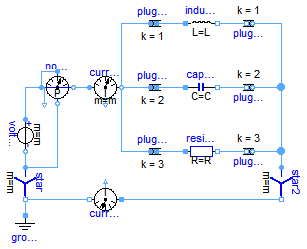
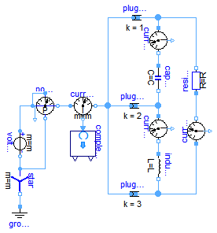

Extends from Modelica.Icons.ExamplesPackage (Icon for packages containing runnable examples).
| Name | Description |
|---|---|
| Balancing an unsymmetrical star-connected load | |
| Balancing an unsymmetrical delta-connected load |
 Modelica.Electrical.QuasiStationary.MultiPhase.Examples.BalancingStar
Modelica.Electrical.QuasiStationary.MultiPhase.Examples.BalancingStar
For the unsymmetrical load (resistor, capacitor and inductor) the parameters inductance L and capacitance C are choosen such way that the neutral current (see currentSensor0) is zero.
P.Vaske, Berechnung von Drehstromschaltungen (German, Calculation of polyphase circuits), Teubner 1973, page 42, example 18
Extends from Modelica.Icons.Example (Icon for runnable examples).
| Type | Name | Default | Description |
|---|---|---|---|
| Integer | m | 3 | Number of phases |
| Voltage | V | 100 | Source Voltage [V] |
| Frequency | f | 50 | Source frequency [Hz] |
| Resistance | R | 10 | Load resistance [Ohm] |
| Inductance | L | (R*sqrt(3))/(2*Modelica.Cons... | Load inductance [H] |
| Capacitance | C | 1/(R*sqrt(3))/(2*Modelica.Co... | Load capacitance [F] |
model BalancingStar "Balancing an unsymmetrical star-connected load"
extends Modelica.Icons.Example;
parameter Integer m=3 "Number of phases";
parameter Modelica.SIunits.Voltage V = 100 "Source Voltage";
parameter Modelica.SIunits.Frequency f = 50 "Source frequency";
parameter Modelica.SIunits.Resistance R = 10 "Load resistance";
parameter Modelica.SIunits.Inductance L = (R*sqrt(3))/(2*Modelica.Constants.pi*f)
"Load inductance";
parameter Modelica.SIunits.Capacitance C = 1/(R*sqrt(3))/(2*Modelica.Constants.pi*f)
"Load capacitance";
QuasiStationary.MultiPhase.Sources.VoltageSource voltageSource(
m=m,
f=f,
V=fill(V, m),
phi={-(j - 1)*2*Modelica.Constants.pi/m for j in 1:m});
QuasiStationary.MultiPhase.Basic.Star star(m=m);
QuasiStationary.SinglePhase.Basic.Ground ground;
QuasiStationary.MultiPhase.Basic.PlugToPin_p plugToPin_p1( m=m, k=1);
QuasiStationary.MultiPhase.Basic.PlugToPin_p plugToPin_p2( k=2, m=m);
QuasiStationary.MultiPhase.Basic.PlugToPin_p plugToPin_p3( k=3, m=m);
QuasiStationary.MultiPhase.Sensors.PowerSensor powerSensor(
m=m);
QuasiStationary.MultiPhase.Sensors.CurrentSensor currentSensor(
m=m);
QuasiStationary.SinglePhase.Basic.Resistor resistor(R_ref=R);
QuasiStationary.SinglePhase.Basic.Capacitor capacitor(C=C);
QuasiStationary.SinglePhase.Basic.Inductor inductor(L=L);
QuasiStationary.MultiPhase.Basic.Star star2(m=m);
QuasiStationary.MultiPhase.Basic.PlugToPin_n plugToPin_n1( m=m, k=1);
QuasiStationary.MultiPhase.Basic.PlugToPin_n plugToPin_n2( k=2, m=m);
QuasiStationary.MultiPhase.Basic.PlugToPin_n plugToPin_n3( k=3, m=m);
QuasiStationary.SinglePhase.Sensors.CurrentSensor currentSensor0;
equation
connect(ground.pin, star.pin_n);
connect(star.plug_p, voltageSource.plug_n);
connect(voltageSource.plug_p, powerSensor.currentP);
connect(powerSensor.currentN, currentSensor.plug_p);
connect(powerSensor.voltageP, powerSensor.currentP);
connect(powerSensor.voltageN, star.plug_p);
connect(currentSensor.plug_n, plugToPin_p2.plug_p);
connect(currentSensor.plug_n, plugToPin_p3.plug_p);
connect(currentSensor.plug_n, plugToPin_p1.plug_p);
connect(plugToPin_p1.pin_p, inductor.pin_p);
connect(plugToPin_p2.pin_p, capacitor.pin_p);
connect(plugToPin_p3.pin_p, resistor.pin_p);
connect(inductor.pin_n, plugToPin_n1.pin_n);
connect(capacitor.pin_n, plugToPin_n2.pin_n);
connect(resistor.pin_n, plugToPin_n3.pin_n);
connect(plugToPin_n1.plug_n, star2.plug_p);
connect(plugToPin_n2.plug_n, star2.plug_p);
connect(plugToPin_n3.plug_n, star2.plug_p);
connect(star2.pin_n, currentSensor0.pin_p);
connect(currentSensor0.pin_n, star.pin_n);
end BalancingStar;
Modelica.Electrical.QuasiStationary.MultiPhase.Examples.BalancingDelta
For the unsymmetrical load (resistor, capacitor and inductor) the parameters inductance L and capacitance C are choosen such way that the magnitudes of the three phase currents (see currentSensor12, currentSensor23, currentSensor31) are equal.
P.Vaske, Berechnung von Drehstromschaltungen (German, Calculation of polyphase circuits), Teubner 1973, page 43, example 23
Extends from Modelica.Icons.Example (Icon for runnable examples).
| Type | Name | Default | Description |
|---|---|---|---|
| Integer | m | 3 | Number of phases |
| Voltage | V_LL | 100 | Source voltage line-to-line [V] |
| Frequency | f | 50 | Source frequency [Hz] |
| Resistance | R | 10 | Load resistance [Ohm] |
| Inductance | L | (R*sqrt(3))/(2*Modelica.Cons... | Load inductance [H] |
| Capacitance | C | 1/(R*sqrt(3))/(2*Modelica.Co... | Load capacitance [F] |
model BalancingDelta
"Balancing an unsymmetrical delta-connected load"
extends Modelica.Icons.Example;
parameter Integer m=3 "Number of phases";
parameter Modelica.SIunits.Voltage V_LL = 100 "Source voltage line-to-line";
parameter Modelica.SIunits.Frequency f = 50 "Source frequency";
parameter Modelica.SIunits.Resistance R = 10 "Load resistance";
parameter Modelica.SIunits.Inductance L = (R*sqrt(3))/(2*Modelica.Constants.pi*f)
"Load inductance";
parameter Modelica.SIunits.Capacitance C = 1/(R*sqrt(3))/(2*Modelica.Constants.pi*f)
"Load capacitance";
QuasiStationary.MultiPhase.Sources.VoltageSource voltageSource(
m=m,
f=f,
V=fill(V_LL, m),
phi={-(j - 1)*2*Modelica.Constants.pi/m for j in 1:m});
QuasiStationary.MultiPhase.Basic.Star star(m=m);
QuasiStationary.SinglePhase.Basic.Ground ground;
QuasiStationary.MultiPhase.Basic.PlugToPin_p plugToPin_p1( m=m, k=1);
QuasiStationary.MultiPhase.Basic.PlugToPin_p plugToPin_p2( k=2, m=m);
QuasiStationary.MultiPhase.Basic.PlugToPin_p plugToPin_p3( k=3, m=m);
QuasiStationary.MultiPhase.Sensors.PowerSensor powerSensor(
m=m);
QuasiStationary.MultiPhase.Sensors.CurrentSensor currentSensor(
m=m);
QuasiStationary.SinglePhase.Basic.Resistor resistor(R_ref=R);
QuasiStationary.SinglePhase.Basic.Capacitor capacitor(C=C);
QuasiStationary.SinglePhase.Basic.Inductor inductor(L=L);
QuasiStationary.SinglePhase.Sensors.CurrentSensor currentSensor12;
QuasiStationary.SinglePhase.Sensors.CurrentSensor currentSensor23;
QuasiStationary.SinglePhase.Sensors.CurrentSensor currentSensor31;
Modelica.ComplexBlocks.ComplexMath.ComplexToPolar complexToPolar[m];
equation
connect(ground.pin, star.pin_n);
connect(star.plug_p, voltageSource.plug_n);
connect(voltageSource.plug_p, powerSensor.currentP);
connect(powerSensor.currentP, powerSensor.voltageP);
connect(powerSensor.currentN, currentSensor.plug_p);
connect(powerSensor.voltageN, star.plug_p);
connect(currentSensor.plug_n, plugToPin_p2.plug_p);
connect(currentSensor.plug_n, plugToPin_p1.plug_p);
connect(currentSensor.plug_n, plugToPin_p3.plug_p);
connect(currentSensor12.pin_p, plugToPin_p1.pin_p);
connect(currentSensor12.pin_n, capacitor.pin_p);
connect(capacitor.pin_n, plugToPin_p2.pin_p);
connect(plugToPin_p2.pin_p, currentSensor23.pin_p);
connect(currentSensor23.pin_n, inductor.pin_p);
connect(inductor.pin_n, plugToPin_p3.pin_p);
connect(plugToPin_p1.pin_p, resistor.pin_n);
connect(resistor.pin_p, currentSensor31.pin_n);
connect(currentSensor31.pin_p, plugToPin_p3.pin_p);
connect(currentSensor.y, complexToPolar.u);
end BalancingDelta;